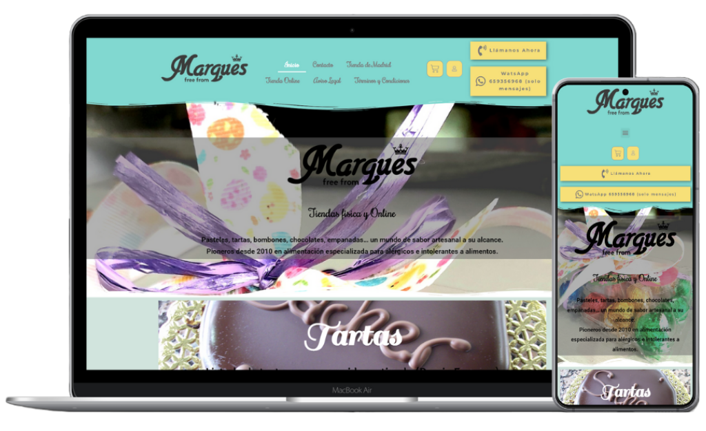

Rebuilding the (WordPress) Landing Page of a Pastry Shop
For this personal portfolio project, I rebuilt the broken and outdated landing page of a pastry shop based in WordPress and Elementor.
If you wish to jump right into the results, click on the buttons below:
If you wish to check a small breakdown of what I took in consideration when re-designing it, keep reading!
This is what the original website looked like when I found it:
And these were my notes at a glance:
- It's based on WordPress with the theme Twenty Twenty-One installed.
- Elementor and WooCommerce are installed.
- There's a PHP error displayed under the footer.
- The pop-up window that displays when the page is done loading is not responsive.
- The site is technically overall responsive, but it's not optimized for low resolutions or mobile devices. This is especially noticeable in the navigation bar, which is difficult to read on mobile due to the font sizes, faces, and even colors in some areas.
- The color palette is inconsistent. Yellow buttons, green and pink areas mixed everywhere, background images that don't work as intended...
- Too many buttons!
- Too many fonts!
- Too much of everything!
- There are two hero images, and both are difficult to read due to the low contrast between the colors of the background photos and the fonts.
- There are several typos here and there (including the brand name WhatsApp misspelled at the top in the navigation bar), and the copywriting is not following SEO guidelines.
- Quite a few sections, links, and buttons are redundant and repetitive.
- The design is overall overwhelming and unclear.
This pastry shop website is an unfortunate example of how marvelous tools such as WordPress and Elementor can only go so far in untrained hands.
I had some ideas on how to improve the site, but since it's WordPress-based, I would have had no way to share the results in my GitHub portfolio, since GitHub doesn't support PHP (for now) or full WordPress installations (which is understandable due to the resources it would demand from their servers). So instead, I decided to rebuild the landing page with HTML, CSS, and JavaScript so I could upload it here.
Considering my initial notes, these were the premises I had in mind when rebuilding the landing page:
- I wanted to respect the original idea and style of the site.
- Two hero images? It should be just one, and it should be readable.
- Speaking of readable, the fonts have to change as well. I chose Open Sans for paragraphs, Montserrat for navigation and buttons, and Lobster for titles and headings.
- I removed the image slider close to the footer because having two hero images and a slider felt like a little too much.
- Too many colors! I chose an orange color palette.
- I fixed the typos I found but didn't rewrite any of their contents.
- I removed redundant buttons linking to the same contents over and over again. Buttons should be special! If a design is filled with buttons everywhere, none of them really stand out.
- I removed the shop embeded right into the landing page, to encourage users to navigate and view the separate catalogue itself.
- I relocated the links to the Legal Disclaimer and the Terms & Conditions from the navigation bar to the footer.
- I slightly extended the product features section ("allergen free," "100% gluten-free," and "vegan friendly") and got rid of the buttons while keeping the links for users that might want to know more about each feature.
- The "Shop in Madrid" section featured a button that lead to another page with information about the location, opening hours, and phone number... but this information is also displayed in the footer! This section was also followed by yet another button that lead to information on delivery costs and delays... So I decided to get rid of the first button and embed the link on the text itself, while keeping only the second one.
- Links to the two social media profiles of the shop were located in the navigation bar, the section following "Shop in Madrid," and the footer. I decided to keep them in the navigation bar and the footer, but removed the extra section from within the page contents.
- The logo was also everywhere (navigation bar, hero image, and footer), so I decided to keep it where it matters most: at the top, over the hero image.
Would you like to see the results?

Reconstruyendo la Página de Portada (en WordPress) de una Pastelería
Para este proyecto de muestra de mi portfolio personal, reconstruí una página de portada de una pastelería hecha en WordPress con Elementor.
Si deseas ir directo a los resultados, clickea en los botones a continuación:
Si prefieres un breve desglose de las consideraciones que tomé al resideñarlo, ¡continúa leyendo!
Así es cómo se veía el sitio original cuando lo encontré:
Y estas fueron mis anotaciones iniciales:
- Es un sitio web basado en WordPress con la plantilla Twenty Twenty-One instalada.
- Tiene instalados los plugins Elementor y WooCommerce.
- Hay un error de PHP que se muestra debajo del pie de página.
- La ventana emergente que se muestra al cargar la página no es responsive (adaptativa).
- El sitio es tecnicamente responsive en general, pero no está optimizado para resoluciones bajas ni dispositivos móviles. Esto es especialmente notable en la barra de navegación, que resulta difícil de leer en móviles debido al tamaño, estilo e incluso color de las fuentes en algunas áreas.
- La paleta de colores es inconsistente. Botones amarillos, áreas verdes y rosas mezcladas por todas partes, imágenes de fondo que no funcionan como deberían...
- ¡Demasiados botones!
- ¡Demasiadas fuentes!
- ¡Demasiado de todo!
- Hay dos imágenes de portada y ambas dificultan la lectura por el bajo contraste de colores entre las fotos de fondo y las fuentes.
- Hay varios errores gramaticales dispersos (incluyendo el nombre de la marca WhatsApp mal escrito en la barra de navegación superior) y la redacción no cumple con pautas SEO idóneas.
- Varias secciones, enlaces y botones son redundantes y repetitivos.
- A grandes rasgos, el diseño es abrumador y poco claro.
El sitio web de esta pastelería es un ejemplo desafortunado de cómo no se puede llegar demasiado lejos con herramientas maravillosas como WordPress y Elementor en manos no entrenadas.
Tenía algunas ideas sobre cómo mejorar el sitio pero, al estar basado en WordPress, no habría tenido la posibilidad de compartir los resultados en mi portfolio de GitHub, ya que GitHub no soporta PHP (por ahora) ni instalaciones completas de WordPress (lo cual es entendible debido a los recursos que demandaría de sus servidores). Por lo tanto, decidí reconstruir la página de portada con HTML, CSS y JavaScript para poder cargarla aquí.
Considerando mis anotaciones iniciales, estas fueron las premisas que tuve en cuenta al reconstruir la página de portada:
- Quise respetar la idea y el estilo original del sitio.
- ¿Dos imágenes de portada? Debería ser sólo una, y debería poder leerse bien.
- Hablando de leer bien, las fuentes deben cambiar también. Elegí Open Sans para párrafos, Montserrat para la navegación y los botones, y Lobster para títulos y encabezados.
- Quité las imágenes deslizables que se encontraban cerca del pie de página porque tener dos imágenes de portada y, además, imágenes deslizables me pareció demasiado.
- ¡Demasiados colores! Elegí una paleta de color naranja.
- Corregí los errores gramaticales que encontré pero no reescribí ninguno de los contenidos.
- Quité botones redundantes que enlazaban a los mismos contenidos una y otra vez. ¡Los botones deberían ser especiales! Si un diseño está plagado de botones en todas partes, ninguno de ellos se destaca realmente.
- Quité la tienda incrustada en la misma página de portada, para incentivar a los usuarios a navegar y ver el catalogo por separado.
- Reubiqué en el pié de página los enlaces al Aviso Legal y los Términos y Condiciones que se encontraban en la barra de navegación.
- Extendí ligeramente la sección de características de los productos ("sin alérgenos", "100% libre de gluten" y "vegan friendly"), y quité los botones aunque mantuve los enlaces para los usuarios que deseen saber más acerca de cada característica.
- La sección "Tienda en Madrid" incluye un botón que lleva a otra página con datos acerca de la ubicación, los horarios de apertura y el número telefónico... ¡pero estos datos ya se muestran en el pie de página! Además, a esta sección le sigue otro botón que lleva a la información sobre los costos y demoras de envíos... Así que decidí quitar el primer botón e incluir el enlace dentro del texto mismo, pero manteniendo el segundo botón.
- Los enlaces a los dos perfiles de redes sociales de la tienda se ubicaban en la barra de navegación, en la sección siguiente a "Tienda en Madrid" y en el pie de página. Decidí conservarlos en la barra de navegación y en el pie de página, pero los quité de la sección extra dentro de los contenidos de la página misma.
- El logo también estaba en todas partes (barra de navegación, imagen de portada y pie de página), así que decidí conservarlo donde es más relevante: sobre la imagen de portada.
¿Quieres ver los resultados?